READING CLUB · 论文精读 · 2026-10-13
仿星器边界表示：
固定极向角，减少优化冗余
Representing the boundary of stellarator plasmas
用旋转截面中的几何投影固定极向参数，把设计变量集中在形状变化上。模型与真实平衡优化显示收益，但单一高度极值条件、有限截断和对照预算仍决定它能解决多少困难。
完整阅读上传正式版 16 页；15 幅原图全部保留并逐图解释；无附录或原表。公式离线预渲染并保留 LaTeX 源码。未复现原始优化；按要求未进行浏览器检查。
1. 这篇论文要解决什么
核心判断：边界的形状是物理输入，沿边界走动时使用的极向角标签并不是额外的物理自由度。传统 Fourier 系数同时编码了两者；作者用一个几何投影规则固定极向参数，再把这个规则放入随环向角旋转的坐标系，以减少优化中的近似冗余方向。（§1–4，PDF 第 1–6 页）
对于具有嵌套磁面的固定边界 MHD 平衡，在平衡存在等前提下，边界形状与压力／电流剖面决定平衡；旋转变换剖面可替代电流剖面。这使边界系数成为仿星器优化的常用设计变量。论文的重点是这些设计变量的表示效率与优化地形，未提出新的平衡方程，也未验证湍流输运、线圈工程可行性或实验约束改善。（§1、§5.3）
| 问题／贡献 | 论文给出的证据 | 能支持的结论 |
|---|---|---|
| 不同系数能描述同一几何 | 式（2.1）重参数化；有限截断讨论；图 5–6 的圆截面重复表示 | 角度自由度确实存在；有限截断通常形成近似而非严格的连续冗余 |
| 直接固定角度，减少设计变量 | 式（4.8）–（4.11）的显式构造 | 在选定旋转框架、中心及分支规则下，可避免任意角度选择；不能覆盖具有多个旋转高度极值的所有形状 |
| 改善优化地形 | 同一圆目标的图 3–11；局部与 Differential Evolution 对比 | 测试模型中的多重极小明显减少；低阶新表示仍有浅局部极小，未证明一般目标凸性 |
| 保留实用边界表达能力 | D 形、豆形、W7-X 的图 12–13 | 少量模式能重现这些案例；未给出系统误差阶、曲率误差或完整参数集合 |
| 改善真实三维优化 | ROSE＋VMEC＋Brent，图 14–15；同权重下目标函数通常小约两个数量级 | 所报告目标和初猜下有实际收益；缺少时间表、多初猜统计及等表达能力的系统基准 |
阅读顺序：先理解“几何不变而角度改变”，再看旋转框架为什么必要；随后用圆模型区分冗余、无效曲面与局部求解器误差，最后评估三维证据。报告把作者结论、直接原文证据与读者判断分开，不把“通常有效”扩大为全局优化保证。
2. 几何与参数：冗余从哪里来
2.1 传统边界表示及其对称性
原式（1.1），PDF 第 1 页。
是柱坐标； 是几何环向角， 是可选择的极向参数； 是模式整数，系数具有长度量纲。本文限制为 stellarator symmetry：
这解释了余弦／正弦的奇偶选择。去掉该对称性需加入相反奇偶项，作者称系数数目约加倍，但未在数值实验中测试非对称推广。作者用 估计搜索维数；脚注 1 提醒零极向模的重复／无效项通常会删去，因此这不是严格独立参数计数。（式（1.2），第 1–2 页）
2.2 保持曲面不变的角度变换
原式（2.1），PDF 第 2 页；式（2.2）–（2.3）分别定义两组空间点的集合。
连续、双周期的 重新安排边界点的标签。给定 ，角度映射绕圆一周的度数保持为一，因此空间点集合仍是原曲面。要把它当作没有折返的一一坐标，还需单调性；作者给出的充分条件为 ，保证 。保持仿星器对称性还要求 。（第 2 页与脚注 2）
无穷 Fourier 展开能容纳这一整族重参数化；有限截断一般不能，因为复合后的函数会产生更高模式。故低阶时系数可能近乎唯一，高阶时不同系数更容易近似同一形状。不能把有限维问题一概称为精确零空间。“先少模、再逐步加模”能缓解停滞，但角度自由度的根源依然存在。（§2，第 2–3 页）
2.3 对优化的直观含义
读者解释：若代价只取决于物理几何，则切向挪动点主要改变标签、法向挪动点才改变形状。以全部坐标系数优化，会混入几何效果很小的方向，影响有限步长、尺度选择及局部搜索。本文用具体模型展示这种困难，未计算一般物理目标的 Hessian 谱；“病态方向”在这里是解释，不是已经测出的条件数。
还必须区分“一一重参数化”和“重复绕边界”。图 5–6 的第二个圆用 描述，在一个极向周期中绕圆两次，空间点集合相同，但坐标不是一一映射。这使圆模型同时探测了角度冗余和缺少坐标有效性限制的后果。
3. 与谱凝聚相比，作者省掉了什么
spectral condensation 保持曲面几何不变，选择使谱宽最小的角度。它在本文描述的 VMEC／SPEC 内部使用，但内部磁面角度调整并不自动等于外部边界优化已消除所有设计变量冗余。（§1、§3，第 2–4 页）
原式（3.1）的谱宽记作 ，本报告改用 以免与截断阶数混淆；PDF 第 3 页。
高极向模受到更大权重，谱宽越小，表达越集中于低模。这里“最优”指给定这项谱宽及约束后的最优，不是所有误差指标、参数预算或物理目标的普遍最优。SPEC 的脚注 3 定义省去分母，不能混用两种数值。作者随后约定零极向模不参与；尤其取 时，应显式写出零模处理，避免程序对 的默认值改变定义。（第 3–4 页）
一阶切向扰动产生的系数变化为：
原式（3.2）–（3.4），PDF 第 3–4 页；下标 表示偏导。
若对所有允许的角度扰动都达到驻点，需有 。实际将 展开，令选定的 个 Fourier 系数为零，数值上减少相应自由度。它把搜索约束到一个子流形，原系数仍保留，通常还要解约束系统。一阶驻点条件本身不是全局最小证明。
本文替代方案直接限制一条旋转坐标的极向依赖，只优化剩下的系数，随后通过显式线性公式生成传统边界输入。因此省去“为每个边界求谱宽最优角度”的嵌套优化。作者说计算更省，但未报告谱凝聚与新方法逐次计时，成本优势的大小尚不能量化。（§4、§5.2）
4. 完整构造：先固定角度，再跟随截面旋转
4.1 最简单的角度规范
原式（4.1）–（4.2），PDF 第 4 页；此处求和下限按上传 PDF，出版社 HTML 的后一个下限与 PDF 不同。
在每个截面， 给出高度中点、 为高度半幅。将边界点沿水平方向投影到同高度的参考圆，再以圆上的极角标记；需要按边界左右两支连续选择角度，不能仅用单值反正弦覆盖全周。 仍可保留较多极向模，表达三角形变或凹入。（第 4–5 页）
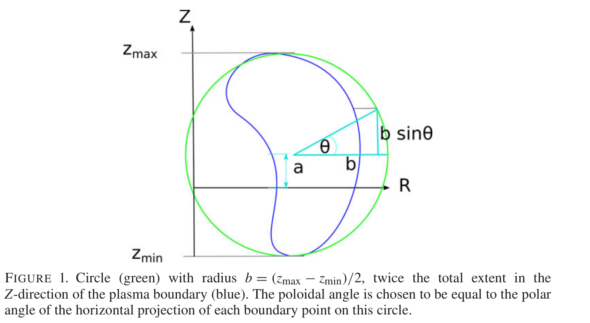
来源：Henneberg、Helander 与 Drevlak（2021），representing-the-boundary-of-stellarator-plasmas (1).pdf，PDF 第 5 页（印刷页相同）。原图按 CC BY 4.0 署名转载，仅裁剪页面留白，未重绘或修改数据。
读图：横轴是 ，纵轴是 ；没有数值单位，是几何示意。高度上下端点决定 ，高度中点决定 。蓝色截面可以凹入，规则不要求它围绕中心严格星形。
支持与边界：规则把高度写成一项正弦，在上下极值之间需要两条连续单调分支；若同一方向出现多组极值，规则不能一一覆盖。原图注中的“twice the total extent”与紧邻公式不一致；公式和示意圆都对应半幅，本报告据此解读，原图保留原文。
4.2 为什么固定垂直方向不够经济
经典仿星器的椭圆截面会随环向位置旋转。若始终强制实验室 只含一个极向正弦，虽可能重现该形状，却要用更多 模式。磁轴附近通常也有旋转椭圆，这使该缺点具有实际意义。（第 5–6 页）
原式（4.5）–（4.7），PDF 第 5 页； 为椭圆半轴， 为旋转速率。上式 的两个符号已按页面公式视觉核对，不能按提取文本的错序抄写。
几何环向角约定下，经典仿星器取 ，其中 为场周期数：每场周期截面主轴转半圈。椭圆的两组正弦系数不满足固定高度方案对正负环向模的简单等值约束。问题在于坐标选择，非椭圆本身复杂。
4.3 最终方案：在旋转高度方向只保留一项正弦
原式（4.8）–（4.9），PDF 第 6 页。
是截面参考中心曲线，不应自动当作已知磁轴。 都是旋转截面的长度坐标，这里的 不是归一化小半径或磁通半径。真正被投影约束的相位是 ； 与前一椭圆演示中的局部参数不应不加说明地混用。旋转框架让简单旋转椭圆仍由很少模式描述。
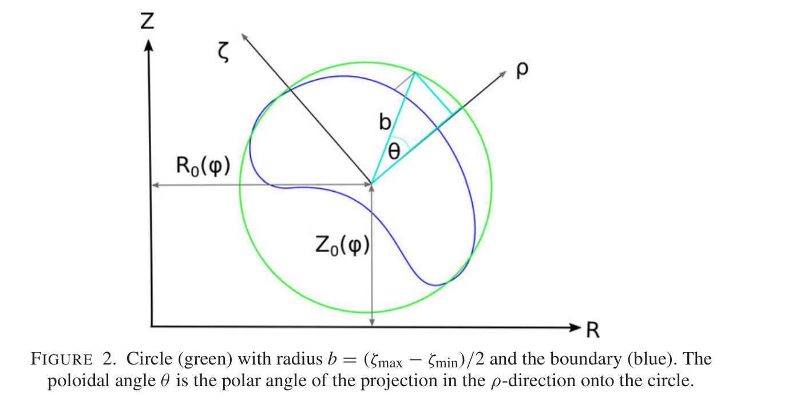
来源：Henneberg、Helander 与 Drevlak（2021），representing-the-boundary-of-stellarator-plasmas (1).pdf，PDF 第 7 页（印刷页相同）。原图按 CC BY 4.0 署名转载，仅裁剪页面留白，未重绘或修改数据。
读图：外层横／纵轴是柱坐标 ，斜轴是 ；沿 方向投影，保持旋转高度 不变。圆半径为 ，没有数据单位或色条。
解释：与图 1 相比，角度规范随截面主要旋转方向走，防止一个简单旋转椭圆在固定垂直投影下变成高阶谱。图中角标是几何示意；实现以式（4.9）的相位为准。它支持构造的几何意义，未展示所有形状都能覆盖，也未给出中心选择的唯一算法。
4.4 向常规边界系数转换
原式（4.10）–（4.11），PDF 第 6 页； 为 Kronecker delta。
余弦／正弦乘法把旋转框架系数分到两个环向索引； 只进入第一极向模。中心曲线和零极向模需另行处理。指数偏移 必须与整数谱相容，不能在数组索引里随意使用非整数旋转速率。输出带宽也会扩展，提前截掉移位模式会破坏等价性。
原式（4.12）–（4.13）， 的特例，PDF 第 6 页。
实现约定与独立核查：本报告令仅在非负索引定义的余弦幅度 在负索引处为零，所有截断外系数为零；这保留 的正确因子。固定中心、只含非零极向模的测试中，分别以 和每组 713 个角度点比较显式坐标与转换后的完整 Fourier 和，最大绝对差约为 。这是读者的有限代数核查，不能替代几何有效性证明或原论文优化复现。记录见 代数核查。
一次优化迭代的完整链条：选定中心、旋转约定与有效模式 → 调整 等独立变量 → 重建并检查边界 → 显式转换为 → 固定边界平衡求解 → 计算物理残差及加权目标 → 优化器提出下一组变量。若从现有点云开始，则先识别旋转高度的两支、重采样角度并 Fourier 分解。最后一步是报告整理的实现流程，原文未提供完整源代码。
5. 圆目标实验：从重复极小到较温和的地形
5.1 固定几何目标，改变表示
作者先使用轴对称环面，目标极向截面是单位圆，主半径 。长度以单位圆尺度归一化，以下数字不是某个装置的米制尺寸。（§5.1，PDF 第 6–12 页）
原式（5.1）–（5.2），第 7 页；表面积改记 ，避免与椭圆半轴混淆。
这是按面积加权的圆偏离残差平方平均。除以面积避免塌缩到零面积时积分人为变小；整体收缩到中心线时，归一化目标趋近一。但目标没有自动限制自交、重复覆盖、体积和面积过大；脚注 4 还提醒，有界而高度褶皱、面积很大的曲面也能使目标任意小。低 不保证有效边界。
原式（5.3）–（5.5），第 7–8 页。
后一式是对高维目标中的两个变量求最小后得到的二维值函数，不是固定其余变量的切片。“min”还需看具体算法：局部求解的分支值未必等于全局最小。图中等高线投在负高度平面只是绘图方式，目标本身非负；颜色不是置信度。
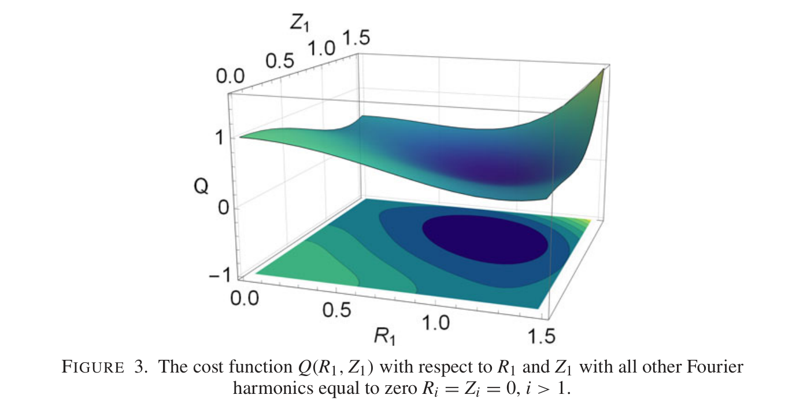
来源：Henneberg、Helander 与 Drevlak（2021），representing-the-boundary-of-stellarator-plasmas (1).pdf，PDF 第 8 页（印刷页相同）。原图按 CC BY 4.0 署名转载，仅裁剪页面留白，未重绘或修改数据。
读图：水平轴为归一化长度系数 ，竖轴为无量纲 ，下方为等高线。最低区域围绕 ，对应单位圆。
证据：展示的正系数范围中没有大量竞争谷地，支持低阶起步的直观理由；未证明整个系数空间只有一个极小，也未覆盖符号改变造成的坐标走向变化。
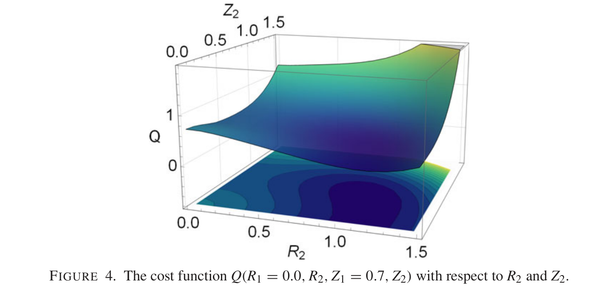
来源：Henneberg、Helander 与 Drevlak（2021），representing-the-boundary-of-stellarator-plasmas (1).pdf，PDF 第 8 页（印刷页相同）。原图按 CC BY 4.0 署名转载，仅裁剪页面留白，未重绘或修改数据。
读图：水平轴换成第二模，竖轴仍是 。蓝色低值区表示第二模能改善目标。
限制：它是四变量目标的二维切片。图注明确保留非零 ，不能将它当作“只有一对第二模非零”的图；附近正文的泛指描述不如图注精确。本报告按图注条件解读，图中未给出全空间极小数或成功率。
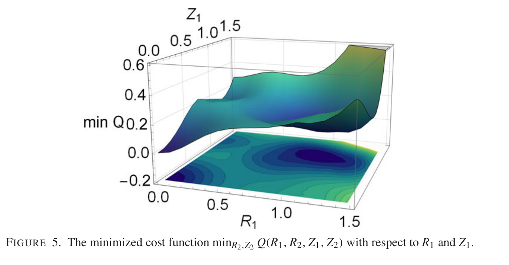
来源：Henneberg、Helander 与 Drevlak（2021），representing-the-boundary-of-stellarator-plasmas (1).pdf，PDF 第 9 页（印刷页相同）。原图按 CC BY 4.0 署名转载，仅裁剪页面留白，未重绘或修改数据。
观察：第 8 页报告三个极小：；以及 ，都给出同一个单位圆。第三个在 ，。近似数字来自正文，没有按颜色读值。
解释：重复几何对应远隔的系数，另有退化曲面的局部谷地。按系数找到极小未必意味着新的物理设计；图 6 展示对应形状。
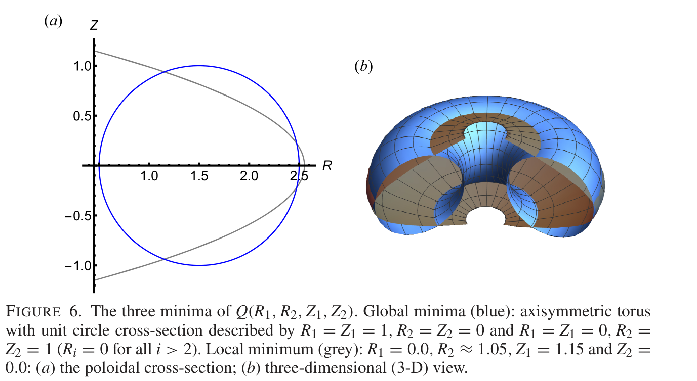
来源：Henneberg、Helander 与 Drevlak（2021），representing-the-boundary-of-stellarator-plasmas (1).pdf，PDF 第 9 页（印刷页相同）。原图按 CC BY 4.0 署名转载，仅裁剪页面留白，未重绘或修改数据。
面板（a）：横轴 、纵轴 均为归一化模型坐标。蓝圆几何相同，第一模走一周，第二模走两周；灰色不是正常包围有限截面积的简单闭曲线。
面板（b）：蓝环面与灰色退化面直观展示“体积为零、面积有限”。颜色标记不同解，非场强或压力。
结论与边界：模型允许非一一覆盖和退化几何；真实平衡求解及额外约束可能排除它们。应区分消除角度冗余与排除无效参数化的收益，不能由此推定所有传统优化都会产生这样的曲面。
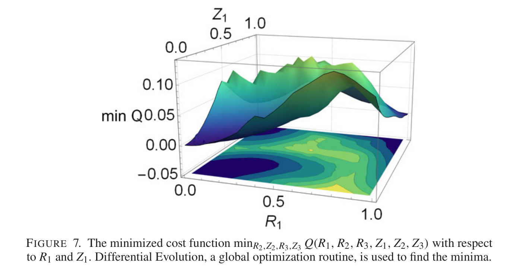
来源：Henneberg、Helander 与 Drevlak（2021），representing-the-boundary-of-stellarator-plasmas (1).pdf，PDF 第 10 页（印刷页相同）。原图按 CC BY 4.0 署名转载，仅裁剪页面留白，未重绘或修改数据。
读图：六变量模型的二维值函数出现峰谷与不规则连接，整体与四变量例子类似，竖轴为搜索返回的最小 。
证据边界：第 9 页提醒，有限预算下全局算法也不保证全局最优，竞争分支可发生跳转。不能把每个不平滑细节都归因于原始目标不连续，也不能当作全部极小的严格枚举。
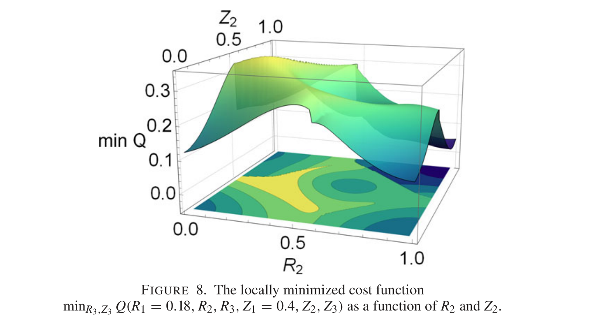
来源：Henneberg、Helander 与 Drevlak（2021），representing-the-boundary-of-stellarator-plasmas (1).pdf，PDF 第 11 页（印刷页相同）。原图按 CC BY 4.0 署名转载，仅裁剪页面留白，未重绘或修改数据。
观察：第 10 页报告，第二模零至一的扫描范围内有五个局部极小及线状跳变。竖轴经过内层局部求解，并非原始六变量切片。
解释：跟随的局部分支消失或改变后返回值会突变，图 9 展示竞争谷地。证据说明内层求解器可使外层看到算法造成的不规则地形，未证明准确全局值函数具有相同跳跃。
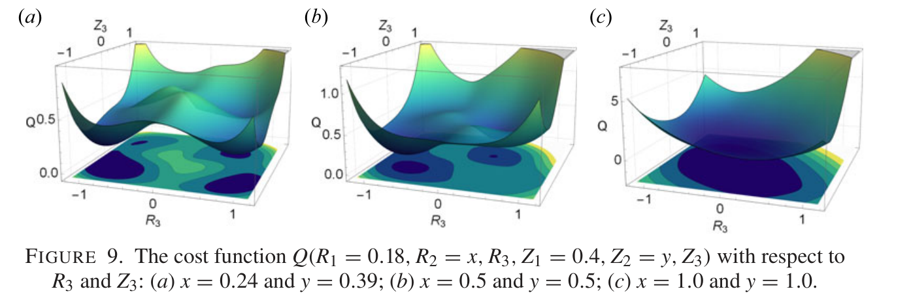
来源：Henneberg、Helander 与 Drevlak（2021），representing-the-boundary-of-stellarator-plasmas (1).pdf，PDF 第 11 页（印刷页相同）。原图按 CC BY 4.0 署名转载，仅裁剪页面留白，未重绘或修改数据。
（a）：，原文报告展示范围内有四个局部极小。（b）：，有两个。（c）：，有一个。（第 10 页）
水平轴均为第三模，竖轴为原始 ，三个面板竖轴尺度不同，不能直接比较图面高度。它们解释图 8 的分支变化，不构成全参数范围分类。
5.2 高度只留第一模，横向继续加模
原式（5.6），第 10 页。
轴对称下最终构造退化为此形式。保留到相同极向阶 时，传统模型有 个非零模系数，新模型有 个，均不计固定主半径。这是模型计数，不可直接推广为三维参数严格减半；中心、环向模式和输出带宽会改变计数。
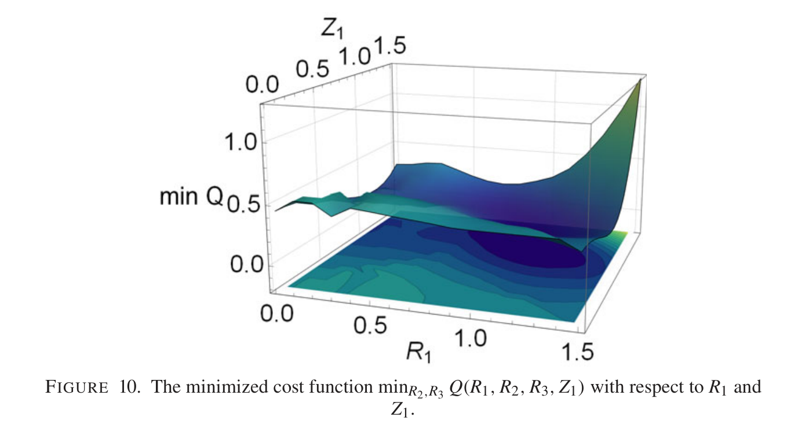
来源：Henneberg、Helander 与 Drevlak（2021），representing-the-boundary-of-stellarator-plasmas (1).pdf，PDF 第 12 页（印刷页相同）。原图按 CC BY 4.0 署名转载，仅裁剪页面留白，未重绘或修改数据。
观察：全局极小为 。第 10 页还报告，在 接近零、 接近一处仍有浅局部极小，进一步增加横向模式后才消失。
结论：固定标签使地形更温和，但图 10 已限制“所有局部极小消失”的宽泛表述。新表示仍需足够表达能力；变量数与有限截断误差共同影响地形。
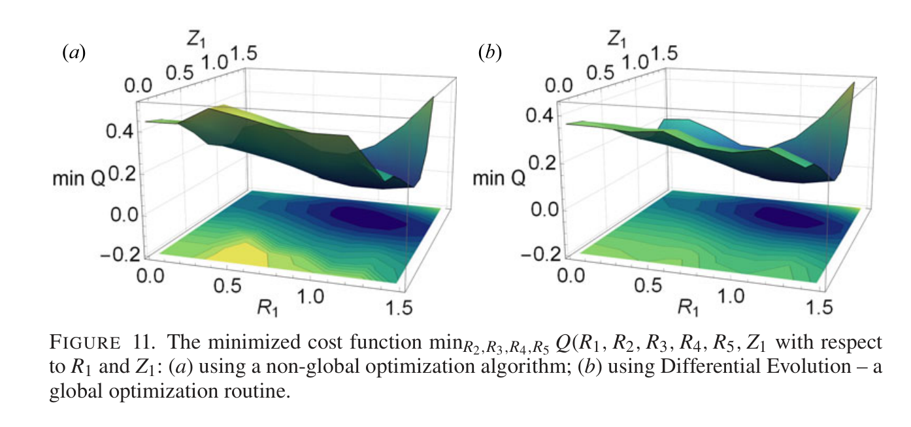
来源：Henneberg、Helander 与 Drevlak（2021），representing-the-boundary-of-stellarator-plasmas (1).pdf，PDF 第 12 页（印刷页相同）。原图按 CC BY 4.0 署名转载，仅裁剪页面留白，未重绘或修改数据。
（a）与（b）：均扫描 ，竖轴为对第二至第五横向模求解后的最小 。主要低值区相似，局部算法较易找到与全局算法接近的解，但仍有数值地形差别。
边界：没有扫描网格、预算、种子或重复次数，也没有同预算高阶传统表示的成功率表。该图支持求解器依赖减轻，不能给出普遍成功率或加速倍数。
6. 表达能力：D 形、豆形与 W7-X
第二组验证将新表示与 Hirshman–Meier（1985）经谱凝聚得到的轮廓比较。作者用 Fourier 分解重建，按系数幅值大于 的阈值选择模式。这是系数截断规则，不等于最大轮廓误差小于百分之一。（§5.2，第 11–13 页）
6.1 D 形
第 11 页正文。新旧 不同，不可按同一数值角度逐点相减。局部轮廓含负横坐标，是平面形状演示，不应把全部值当作正柱半径的完整环面输入。
6.2 豆形
第 11–12 页正文；这些系数来自原文，不是本报告重新拟合的结果。
按已列非零项并包括中心常数计数，D 形两方案均五项，豆形传统方案九项、新方案八项。豆形新方案的最高阶达第六模，却仍使用较少非零项。最高阶、项数与等精度总成本是不同指标；作者承认新方案并不总比谱凝聚省模。（第 12–13 页）
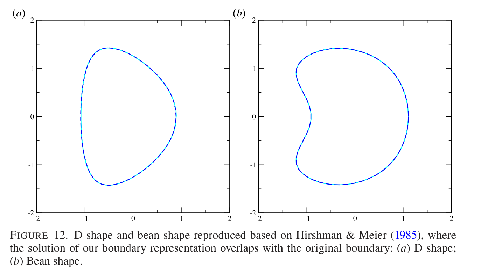
来源：Henneberg、Helander 与 Drevlak（2021），representing-the-boundary-of-stellarator-plasmas (1).pdf，PDF 第 13 页（印刷页相同）。原图按 CC BY 4.0 署名转载，仅裁剪页面留白，未重绘或修改数据。
（a）：外侧圆滑、内侧较平的 D 形。（b）：内侧凹入更强的豆形。横纵坐标为平面位置，未注明米制单位。实／虚线重合支持拟合可行，并不要求参数标签或系数相同。
限制：没有误差曲线、法向或曲率误差以及分辨率扫描，不能仅凭重合证明任意精度。豆形的水平凹入未必违反单一高度极值条件；脚注 5 明确排除具有多个高度极值的 belt pinch，文中没有该反例原图。
6.3 W7-X 三维边界
作者用自由边界平衡求解得到的 Wendelstein 7-X 标准配置边界，报告新表示在 范围可忠实重现。（第 12 页）未列全部系数、输入平衡、旋转中心选择或每条曲线的精确环向角。
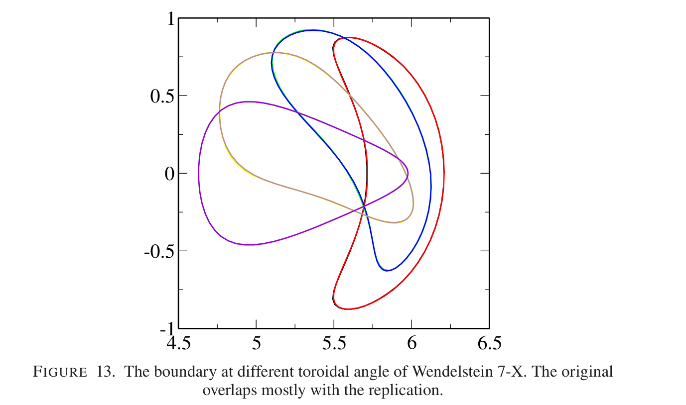
来源：Henneberg、Helander 与 Drevlak（2021），representing-the-boundary-of-stellarator-plasmas (1).pdf，PDF 第 13 页（印刷页相同）。原图按 CC BY 4.0 署名转载，仅裁剪页面留白，未重绘或修改数据。
读图：横坐标约在 4.5 至 6.5，纵坐标约在负一至一；图未明确单位或各颜色精确角度，本报告不补成尺寸或角度表。豆形截面随环向位置旋转，有限模式跟随了这种复杂变化。
边界：颜色非误差量，若干截面重合不等于所有环向位置、导数与曲率都达同一精度。作者没有给出最大几何误差、谱宽或同预算谱凝聚对比表。
7. 三维物理优化：目标下降不等于百倍加速
最后的验证把边界放进平衡与物理目标链条，采用 ROSE、VMEC 和作者称为非梯度、非全局的 Brent 算法，以旋转椭圆开始。（§5.3，第 13–15 页）
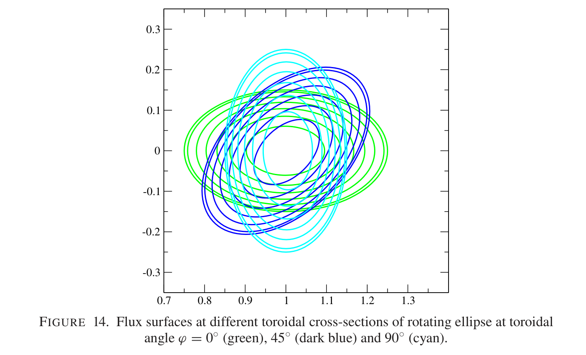
来源：Henneberg、Helander 与 Drevlak（2021），representing-the-boundary-of-stellarator-plasmas (1).pdf，PDF 第 14 页（印刷页相同）。原图按 CC BY 4.0 署名转载，仅裁剪页面留白，未重绘或修改数据。
读图：每种颜色有多条内外嵌套轮廓，是同一环向截面上的不同磁面；外轮廓随环向位置旋转。图示说明旋转框架的自然性，未给轴坐标单位、压力或旋转变换值。
边界：不同颜色交叉是不同环向截面的叠加，不能据此判断三维曲面自交。它确定图 15 的几何起点，未证明目标已经达标。
| 目标／方法 | 原文设置 | 缺少的细节 |
|---|---|---|
| 旋转变换 | 轴上 ，边界 | 实际剖面、罚项尺度和目标误差 |
| 磁阱 | 要求超过阈值 | 此处未定义磁阱归一化、剖面和容差 |
| 边界几何 | 环向投影处处凸 | 离散检测、权重；不等于所有极向截面凸 |
| 对照条件 | 新旧表示同权重；旋转椭圆起步；ROSE＋VMEC＋Brent | 完整模式预算、尺度、优化容差、平衡分辨率、评估次数与初猜统计 |
原式（5.7），第 14 页； 是当前指标， 为目标， 决定 Pareto 取舍。
作者报告：同权重下，新表示通常让总罚函数小约两个数量级；所示例子新方案实现全部目标，传统方案未达到规定旋转变换和无凹的边界投影。还称其他复杂目标结果类似，但未提供独立案例数据。（第 14 页）
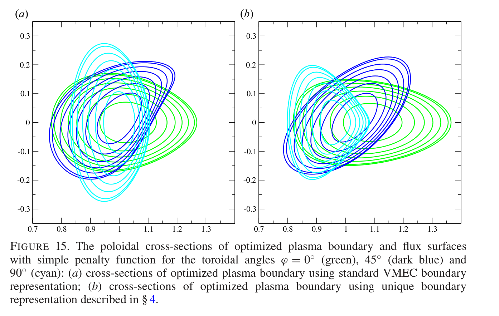
来源：Henneberg、Helander 与 Drevlak（2021），representing-the-boundary-of-stellarator-plasmas (1).pdf，PDF 第 15 页（印刷页相同）。原图按 CC BY 4.0 署名转载，仅裁剪页面留白，未重绘或修改数据。
（a）：传统系数优化的磁面截面。（b）：固定角度规范的磁面截面，绿色外边界更横向拉长，深蓝与青色轮廓也调整了形状及位置。内部线是平衡磁面，不是误差带。
支持：两条搜索路径得到不同几何，与作者所说目标收益一致。图未展示 剖面、磁阱或目标分项，“全部达标”依赖正文，不能由外观独立确认。
不能扩大：总目标降低两个数量级不等于时间加速百倍，也不等于每项物理量改善百倍。没有墙钟、收敛曲线或多初猜统计，新表示与谱凝聚的三维优化对照也未给出。
读者判断：从几何模型到实际平衡链条的证据连续，价值可信，尤其适合局部或无梯度优化。不过表示限制也可能起正则化作用。缺少匹配表达能力、尺度和预算的三臂对照，尚不能把全部收益严格归因于只去掉角度自由度。
8. 批判性核查：条件、排印疑点与证据强度
8.1 最值得保留的结论
角度任意性是清楚的数学事实；固定几何参数规范能改变优化难度，圆目标提供了直接演示；旋转框架解决简单旋转椭圆的谱效率问题，W7-X 案例和三维优化使方法有实际说服力。这些结论有具体推导和图证，强于仅用少量模式“画出好看的边界”。（§2、§4、§5）
8.2 三个不能忽略的限定
表达范围：最终要求每个旋转截面的 方向没有多组最大／最小值。豆形水平凹入可以允许，belt pinch 的多高度极值则明确不能表示。原文第 5 页出现“任何仿星器对称表面”的宽泛措辞，必须与同页条件、脚注 5 和第 15 页结论一起读。作者称这类反例不常见，并可容易推广，但没有给出推广算法与测试。
唯一性：需固定旋转速率、中心选择、角度方向、分支和零模规范，且保持非退化的一一映射。“只剩唯一系数”不能脱离这些前提。第 6 页给出 和零极向模，却没有完整的中心确定规则。若中心与相应零模都任意可变，还可能重新分摊同一位移；实现应明确消除该重复，并检查 Jacobian、连续性和自交。此项是读者指出的实现缺口，不代表已证明论文所有示例存在重复。
全局保证：图 10 自述浅局部极小仍在；一般物理目标仍可能有真实竞争设计。第 15 页说冗余随模式数“指数增长”，但本文没有对应严格计数、增长率或渐近定理；其结论应读作定性强调，不当作已证明的指数复杂度。
8.3 式（4.4）的可核实排印疑点
上传 PDF 第 4 页和出版社 HTML 都显示：
这是原文印刷关系，本报告没有把它悄悄改成正确公式。由式（4.1）–（4.2）展开，对于第一极向模：
但常数项直接为 ，因而应单独有 ，而不是 。按脚注 1 的零极向模仅保留正环向索引约定， 要求 ，没有额外的 因子。若改用双边索引，则应处理相反符号的重复项，也不会普遍得到所印关系。
最小代数反例：只设 ，印刷式给 ，按单边展开得到的高度振幅是一半。只设 ，印刷式同样只给一半振幅。故式（4.4）疑似有排印／约定遗漏，复现应从展开直接确定系数。最终式（4.10）–（4.11）在本报告声明的单边 约定下通过独立代数核查，不能因为中间式疑点就否定最终方案。
8.4 图注与数值证据的细节
- 图 1 图注“twice”与半幅公式矛盾，以公式和图示为准；原图不改。图 4 实际固定 ，不能按附近正文理解成仅第二模非零。
- 图 7–8 的粗糙／跳变含内层优化器误差，不能直接称原始平滑代价存在同样不连续。
- 图 12–13 是重合演示，无误差条、导数或曲率误差；“忠实重现”仍缺量化精度。
- 三维目标“两个数量级”来自第 14 页正文，没有给每次运行的罚函数表；权重、目标归一化和起点会影响结果，不能作为通用收益常数。
8.5 综合可信度
| 结论类型 | 评估 | 尚缺什么 |
|---|---|---|
| 角度冗余的存在 | 数学证据清楚 | 无需靠本文数值实验才能成立 |
| 最终转换公式 | 显式可验证；有限代数检查通过 | 零模、中心及代码索引约定需明确 |
| 所示形状可重建 | 图像与部分系数支持 | 定量误差和全三维输入 |
| 优化更易、更好 | 模型与真实案例共同支持 | 公平预算、多初猜、完整统计与计时 |
| 最经济／所有极小消除／普遍收益 | 未被本文证明 | 一般定理、系统基准或反例范围研究 |
9. 可借鉴的做法：如何迁移到边界优化
9.1 把几何形状和坐标标签分开
借鉴对象：外层只优化固定角度规范下的独立系数，内层保持常规平衡输入格式。为什么有效：减少主要改变标签的方向，避免每次再优化一个谱宽目标。适合具有单一旋转高度最大／最小值的仿星器边界搜索；若采用 VMEC 或其他接收边界谱的求解器，可先写一个独立转换层，而非首先改求解器核心。
迁移步骤：在已有初始几何上确定中心与旋转约定；投影并选择连续分支；拟合 ；重建边界、核对几何距离；转换完整输出谱；确认同一几何在同一平衡分辨率下给出相容结果；再放开优化。用同一物理几何作新旧初猜，不能仅复制同名系数。
成本与失败条件：谱转换是线性代数，通常比平衡求解轻，但采样、重建、连续性与几何检查不可省。若截面多极值、中心不合理、旋转框架选择差、幅度穿零或提前截断输出带宽，可能拟合失真或变得不可逆。本文未给实测占比，应记录自身计时。（动机：§4–5；步骤为读者建议）
9.2 以几何量比较表示，而非直接比较系数
对照两组轮廓时先处理角度对应，使用双向最近点距离或法向误差；对于同一物理截面，还比较面积、体积、切向／法向与曲率。系数相差大并不代表几何相差大；图 5–6 是直接例子。高阶拟合即使轮廓漂亮，导数仍可能偏差，需要按后续物理目标选择精度。（读者建议，依据 §2 与图 12–13 的证据缺口）
本方法与 MXH 角度谐波磁面参数化、约束磁面拟合 的共同问题是“用怎样的角度和参数表示几何”，但本文是三维外边界优化规范，后两者的局部磁面参数与径向导数任务不同。不能直接互换系数或声称本文解决了内磁面径向导数的一致性。
9.3 采用分层复现，避免过早消耗平衡算力
- 代数层：测试单一模式、正负环向索引、常数幅度、多个场周期与移位带宽。中心和零模单独测试；本报告已做部分代数核查。
- 几何层：圆、旋转椭圆、D 形、豆形与多极值反例；检查重参数化后一一覆盖、法向和面积。记录截断误差，不只看图。
- 优化层：先复现圆目标地形与算法分支；随后三维平衡，同权重、同几何起点和同预算，并记录目标分项、失败率、评估次数。
第一层只需已有 conda 环境中的数学库，第二层需几何采样和拟合，第三层才需平衡／优化软件及可能的集群资源。原文没有硬件或算时信息，这里的资源分级为计划建议。
10. 后续研究：把本文局限转成可检验实验
作者明确提出：第 15 页认为可以推广到多个 极值的边界，未给出具体构造。以下三项为本报告提出的研究方案；没有做新颖性检索，因此不宣称首次或尚无人研究。建议先完成第一项，再决定是否投入更广泛形状的表示研究。
10.1 公平基准：收益来自去冗余，还是形状正则化？
动机与假设：图 3–11 改变变量数量，三维例子缺少同表达能力、同预算统计。假设：在相同几何误差预算及可行性限制下，投影规范仍能降低优化器依赖与平衡评估次数。
最小实验：圆模型与旋转椭圆物理目标各比较三组：常规谱、带谱凝聚的谱、本文投影规范。分别做等变量数及等几何重建误差对照，加入相同的一一覆盖、自交和体积限制。以同一组物理初始边界启动，每组建议至少 20 个初猜／种子；这个数是实验建议，不是论文设置。固定平衡与优化容差，记录相同预算下失败例。
指标：达标成功率、目标分项、平衡失败率、评估次数、墙钟、法向几何误差；圆模型还记录内层局部解与高预算参考解差异。若在预定物理容差内持续达标且评估次数／失败率下降，支持去冗余具有独立收益；若匹配可行性与几何精度后优势消失，则不能将原收益全归因于角度规范。
资源与风险：模型成本低，物理组需大量平衡调用；等维数不等于等表达能力，等系数阶数也不公平。尺度预处理、初始化和内层平衡误差可能掩盖收益，必须记录而非事后挑选好例子。
10.2 多极值推广：保留唯一角度而扩大形状范围
动机与假设：脚注 5 和结论排除多高度极值。假设：按旋转高度单调区间建立连续的分段角度图，并固定拼接位置与规范，可以覆盖这类边界，同时避免重新引入任意角度自由度。
最小实验与基线：构造从豆形连续变成多极值的二维轮廓族，先在几何层比较原投影、分段规范和谱凝聚；再扩展为环向周期变化。仅给高度增加任意高阶 Fourier 项会恢复自由度，因此必须明确角度规范与匹接规则。先测试极值产生／合并时的稳定性，再接平衡求解。
指标与判定：给定变量预算的双向几何距离、法向／曲率误差、最小参数速度、重建与拟合成本。若新方案可一一覆盖原方法排除的形状，误差达预先设定容差且切向规范稳定，支持假设；若极值合并时出现不可控跳变或只在大幅增加变量后可用，则应否定其作为连续优化坐标的价值。
资源与风险：初期仅需几何算法，主要难点是图之间切换、分支识别、导数连续性与非对称推广。作者说“容易推广”，本文尚无证据量化这种难度。
10.3 从轮廓重合走向物理和导数误差控制
动机与假设：图 12–13 只给轮廓叠加，未量化导数误差。假设：在相同最大轮廓误差下，不同角度规范会有不同法向／曲率误差；把这些几何量与平衡响应联合用作截断停止条件，比仅按系数阈值更可靠。
最小实验与基线：使用一个高分辨率旋转椭圆和一个可获取的复杂三维边界，对传统谱、谱凝聚和本文方法做逐阶收敛扫描。先对比最近点轮廓误差、表面法向和曲率；只有通过几何核验的案例再计算相同物理输入下的旋转变换和磁阱。原文 W7-X 文件未取得，应明确使用独立可获取案例而不是声称复现该图。
判定：预先指定几何和物理容差，以高分辨率解为参照；若联合标准在多个截断阶数下避免“轮廓已过关、物理仍未收敛”，支持假设；若物理差异主要来自平衡分辨率而非表示，则不能证明联合标准的收益。指标还包括总系数数目与计算时间。
资源与风险：几何扫描较轻，平衡收敛组较昂贵。极值位置导数敏感、插值噪声与不同角度对应容易混淆；应先把几何和物理求解误差分开。
11. 版本、复现材料与覆盖声明
| 材料 | 状态 | 实际覆盖与限制 |
|---|---|---|
| 上传正式发表 PDF | 16 页全部已读并逐页查看 | PDF 与印刷页码一致；§1–6、§5.1–5.3、全部图注及脚注、致谢／资助／利益声明；参考列表用于识别依赖工作 |
| 原文插图 | 15／15 已提取、嵌入、解释 | 图 1–15；多面板图 6、9、11、12、15 完整保留并逐面板解释；未发现有科学信息的额外未编号图，首页 CrossMark 标志不计 |
| 原表与附录 | 无 | 已逐页核对：上传版本没有编号表格或附录；报告里的对照表为读者整理，不冒充原表 |
| 独立补充材料 | 未发现文章专属文件入口或正文引用 | 检查上传版本与出版社条目；站点通用“Publishing supplementary material”导航不是本文补充文件，不将其当遗漏图源 |
| 实现与原始数据 | 本文未提供代码／数据仓库链接；未取得完整运行输入 | 没有 ROSE／VMEC 固定版本、优化权重、参数预算、平衡输入、种子、日志与原始 W7-X 边界文件；不宣称已复现原始优化 |
| 独立核查 | 最终系数映射做了有限代数检查 | 仅核查声明条件下的坐标等价和中间式疑点，不是物理验证或原实验统计复现 |
| 报告验收 | 静态文件与公式检查 | 按用户要求未使用浏览器，未进行实际桌面、窄屏或打印渲染验收；已查看 PDF 页面与最终原图裁剪，图片、锚点、本地字体及预渲染公式另行静态核验 |
11.1 复现前应补齐的输入
圆模型还需角度积分分辨率、扫描网格、系数边界、内层初猜、局部算法及 Differential Evolution 的参数、预算、随机种子和停止标准。三维物理组则需初始边界谱、场周期／角度约定、中心曲线、允许模式、压力／电流或旋转变换输入、VMEC 分辨率与收敛容差、ROSE 版本、目标定义和权重。特别是磁阱阈值必须先确定归一化，不能按本文数字直接套用。
论文没有训练数据、训练集划分或机器学习消融。应核查的是表示／求解器／形状预算的对照和数值误差，不能补出不存在的训练实验。本报告没有向作者发送消息，也没有取得本文实验日志。
11.2 来源、发表信息与许可
- 主证据：用户上传 Representing the boundary of stellarator plasmas，S. A. Henneberg、P. Helander、M. Drevlak；Journal of Plasma Physics 87（5），905870503（2021）。收到 2021-05-25、修订 2021-08-18、接受 2021-08-23，以 PDF 首页为准。
- 论文 DOI及 Cambridge 正式条目：核查访问日期 2026-10-13，条目记载在线发表 2021-09-17；只用于补充发表信息及检查专属材料入口，不混入另一版本的图号或结果。
- arXiv 2105.00768 预印本入口：作为另一个版本入口，未以其全文替代上传正式版，未声称两版逐式一致。
- 方法依赖来自本文参考列表：Hirshman–Meier 1985、Hirshman–Breslau 1998 的谱表示与谱凝聚，Drevlak 等 2019 的 ROSE，Hirshman–Whitson 1983 的 VMEC。未默认追读全部引用或检查这些代码的当前接口。
PDF 首页和出版社条目声明 CC BY 4.0。原图权利归原作者，图下保留作者、年份、原文页码及许可，本文链接可定位来源。图片只由上传 PDF 页面裁剪，未改图中内容；中文解释、读者计数、代数核查、批判性判断和研究设想由本报告整理，不代表原作者结论。
全部原图清单 · 材料及版本清单 · 主要论断证据记录 · 有限代数核查
完成范围：已获取正式版的内容覆盖完整；没有未读附录或未解释编号图。原始数据的数值复现与浏览器布局验收不在已完成范围内。